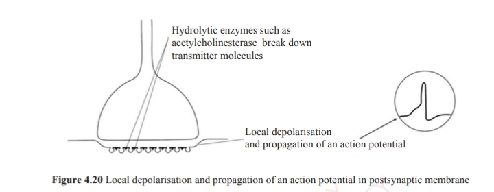

Mechanism involves the following steps
1.Polarization of the neurone’s membrane _Sodium is in high concentration on the outside, whereas potassium is in high concentration on the inside. Cell membranes surround neurones, like any other cell in the body which has a membrane. When a neurone is not stimulated, just sitting with no impulse to carry or transmit, its membrane is said to be polarised. Being polarized means that the electrical charge on the outside of the membrane is positive while the electrical charge on the inside of the membrane is negative (Figure 4.9).
2.The resting potential gives the neurone a break When the neurone is polarised, it is said to be at its resting potential. It remains in this state until when the stimulus comes along (that is, when it is stimulated). When action potential is initiated, a region of the membrane depolarises. As the result the adjacent region becomes depolarised as well (Figure 4.10).
3.Action potential Sodium ions move inside the membrane when a stimulus reaches a resting neurone. The gated ion channels on the resting neurone’s membrane open suddenly to allow the Na+ that was on the outside of the membrane to rush into the cell. While this happens, the neurone changes from being polarised to being depolarised. After more positive ions enter inside the membrane, the inside becomes positive and polarisation is removed and the threshold is reached (Figure 4.11).
During repolarisation, potassium ions move outside, while sodium ions stay inside the membrane. After repolarisation, the inside of the cell becomes flooded with Na+ ; the gated ion channels on the inside of the membrane open to allow K+ to move to the outside of the membrane. With K+ moving to the outside, the membrane’s repolarisation restores electrical balance, although it is the opposite of the initial polarised membrane that had Na+ gates close. Otherwise, the membrane could not repolarize (Figure 4.13). Then Na+ ions are actively forced out of the axoplasm in the process called sodium pump. However, since K+ ions are also involved in this process, the process is best called cation pump
1.An action potential arrives at the end of the axon and induces changes in the cell membrane(figure 4.16)
2.Depolarisation at the synaptic knob after arrival of nerve impulses create the action potential which opens voltage-gated calcium channels located near the synapse in the presynaptic membrane, thus increasing the permeability of the membrane to calcium (Ca2+) ions. The electrochemical gradient for Ca2+ results in the inflow of calcium ions through the open channels (Figure 4.17).
3.In response to the increase of calcium concentration inside the axon, synaptic vesicles fuse with the presynaptic membrane and release neurotransmitters into the gap between the cells which is called the synaptic cleft. The delivery of neurotransmitters into the cleft is an example of exocytosis (Figure 4.18).
4.The vesicles then return to the cytoplasm and are refilled with transmitter substance. The neurotransmitter diffuses across the synaptic cleft, a process which takes 0.5ms per synapse. Upon reaching the postsynaptic membrane, it binds with receptor molecules which recognise the molecular structure of the acetylcholine molecule (Figure 4.19).
5.The arrival of acetylcholine at the postsynaptic membrane changes the shape of the receptor site. This initiates ion channels to open up. The excitatory synapse which opens ion channels on the postsynaptic membrane allowing sodium ions to enter and potassium ions to leave. This creates a new potential known as the excitatory postsynaptic potential in the post synaptic neurone. Once the neurotransmitter has depolarised the post synaptic neurone, it is hydrolysed to form acetyl and choline by the enzyme “acetylcholinesterase” which is found in the postsynaptic membrane. This prevents the successive impulse merging at the synapse (Figure 4.20).  The resulting acetyl and choline diffuses across the synaptic cleft into the synaptic knob of the presynaptic neurone where they get stored in their vesicles for further use. The process is facilitated by energy produced by numerous mitochondria in the knob. The overall depolarising effect of several Excitatory Postsynaptic Potential (EPSPs) is called summation. When two or more EPSPs simultaneously arising at different regions either on the same or different neurones, producing sufficient depolarisation which can starts an action potential in the postsynaptic neurone, the phenomenon is known as spatial summation. The excitatory postsynaptic potential builds up as more neurotransmitter substance arrives until sufficient depolarisation occurs to exceed the threshold value and so generate an action potential in the postsynaptic neurone, this is called temporal summation. All events described are for excitatory synapse, some known inhibitory synapses respond to neurotransmitter by opening potassium ion channels and leaving the sodium ion channels closed. Potassium, therefore, moves out causing the membrane to be polarised; consequently, it prevents the threshold value to be exceeded. Thus no action potential will be created. Functions of synapses (a) They transmit information between neurones. The synapses pass impulses in one direction only. Such impulses are transmitted at the presynaptic membrane and received by the postsynaptic membrane, which ensures one direction of flow along a given pathway. (b) They amplify impulses by acetylcholine which is released at a neuromuscular junction which excite the post synaptic membrane and amplifies any weak impulse arriving. Repeated low level stimuli can be amplified as each impulse is arriving at the synapse, causing the release of more neurotransmitter, resulting in one larger impulse in the postsynaptic neurone. Therefore, this allows the body to respond to the stimuli more effectively. (c) They act as junctions that transmit electric nerve impulses between neurones, or between neurone and effector cells. A synaptic connection between a neurone and muscle cell is known as neuromuscular junction. (d) They filter out low level stimuli; as more neurotransmitter diffuses across the synaptic cleft, the excitatory postsynaptic potential increases. For the impulses to be generated in the postsynaptic neurone, it must reach the action potential of about +40 mV. This implies that weak impulses in the presynaptic neurone do not cause enough neurotransmitter to be released for an action potential in the postsynaptic neurone to be generated. As a result, synapses are able to filter out low level stimuli that the body does not need to respond, that is a way of conserving energy. (e) They allow adaptation to intense stimulation and fatigue. The amount of transmitted substance which is released by synapse steadily falls off in a response to a constant stimulation until the supply of the transmitted substance is exhausted. (f) They allow convergence, spatial summation and integration of the stimuli. In convergence of the stimuli, the postsynaptic nerves receive impulses from a large number of excitatory and inhibitory presynaptic neurones. In a spatial summation postsynaptic neurone is able to sum- up the stimuli from all presynaptic neurones, where the synapse act as a centre for the integration of stimuli from different sources; hence produces the coordinated response.
MECHANISM OF PHOTORECEPTION Rods contain light sensitive pigment rhodopsin, which is attached to the outer surface of vesicles. Rhodopsin is a molecule formed by the combination of a protein called scotopsin with a small light- absorbing molecule called retinene which is a carotenoid molecule derived from vitamin A. When the rhodopsin molecule is exposed to bright light, it breaks down into retinene and scotopsin. This process is called bleaching. Rhodopsin is reformed immediately when light stimulation decreases. Trans retinene is first converted into cis retinene and then recombined with scotopsin. This process is called dark adaptation. Similary, the cone system has a very high spatial resolution but it is relatively insensitive to light. It is therefore specialised for acuity at the expense of sensitivity. This property of the cone system allows us to see colour.
MECHANISM OF SEEING Light rays from the object pass from the external part of the eye to the retina through the conjunctiva, cornea, aqueous humour and pupil (Figure 4.30). The pupil is an opening (an aperture) which is controlled by the iris (like camera shutters) depending on the amount of light. The stronger the amount of light, the smaller the size of the aperture. The lens is positioned between the outer and inner chambers of the eye, and its major function is to focus images on the retina by changing its thickness depending on the amount of light from distant or nearby objects. On the retina, there are cone and rod photoreceptors, which are connected to the brain via a bundle of fibres called optic nerve. The information received is processed in the brain, and consequently, the object can be seen. Thus, the role of the retina is to translate light into nerve signals and allow us to see under various conditions ranging from starlight to sunlight. It also distinguishes the wavelengths for us to discriminate colors.
MECHANISM OF HEARING The mammalian ear functions as an organ for hearing and balance. The process of hearing starts when sound waves enter the outer ear and travel through the external auditory canal until they reach the tympanic membrane, causing the membrane and the attached chain of auditory ossicles to vibrate. The malleus then takes the pressure from the inner surface of the tympanic membrane and passes it by means of the incus to the stapes. There are about 20 times multiplication of sound pressure as it moves from outside to inner ear. The motion of the stapes against the oval window sets up waves in the fluids of the cochlea, causing the basilar membrane to vibrate. This stimulates the sensory hair cells of the organ of corti, on the basilar membrane, to send nerve impulses to the brain. When they reach the auditory area of the cerebral cortex, they are interpreted as a sound. Many sensory hair cells with different thresholds at which they are stimulated exist. The louder the sound, the greater the number of sensory hair cells will be stimulated at any one point of the basilar membrane (Figure 4.33).
MECHANISM OF MAINTANING BODY BALANCE IN MAMMALS The parts of the ear which are concerned with balance are the semicircular canals and vestibule. The semi circular canals are three curved tubes containing endolymph, which communicates with the middle chamber of the cochlea via the utriculus and sacculus. Each of the three canals is set in a plane at right angles to the other. Any movement in any plane will cause movement of canals in the direction of the head. Each of the three canals possesses a swollen portion, the ampulla, within which there is a flat gelatinous plate, the cupula. The movement of endolymph displaces the cupula in the opposite direction to the head movement. The sensory hair found at the base of the cupula detects the displacement and sends impulse to the brain through the vestibular nerve. The brain then initiates motor impulses to various muscles to correct the imbalance (Figure 4.34). All information that aid balance and positioning of the body relative to gravity, as well as changes in the position due to acceleration and deceleration is provided by utriculus and sacculus. Such information is provided by granules known as otoliths which are embedded in jellylike materials. Various movements of the head cause this otolith to displace sensory hair cells on the regions of the walls of utriculus and sacculus which respond to vertical and lateral movements respectively. Then the sensory hair cells send appropriate sensory impulse to the brain.